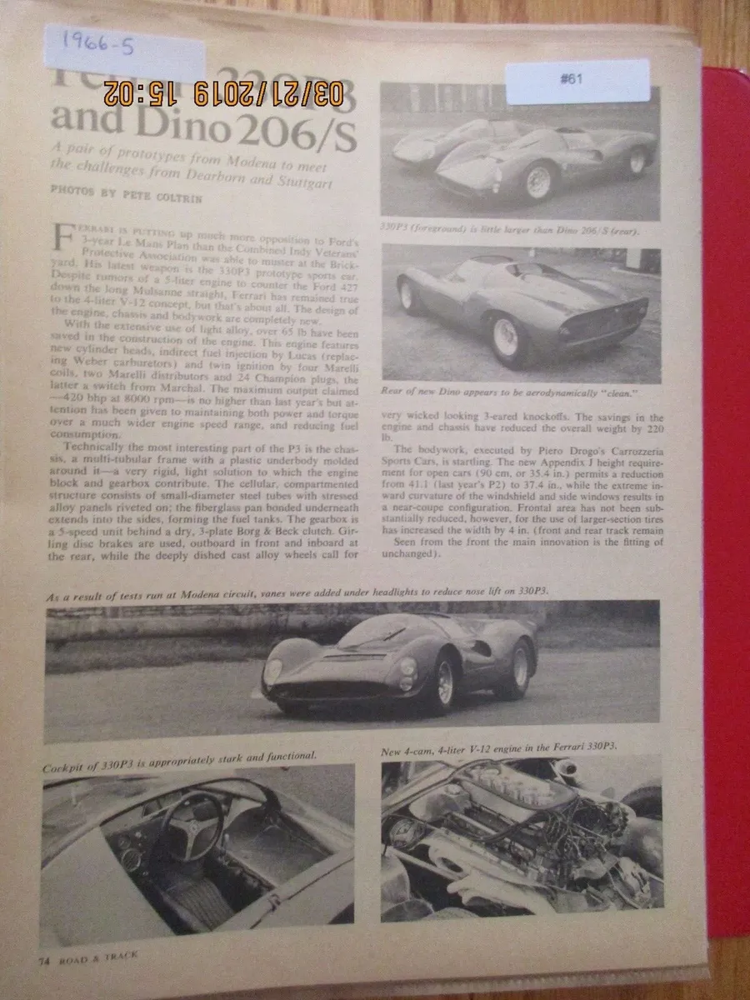
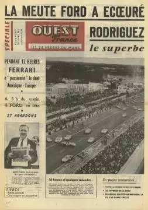
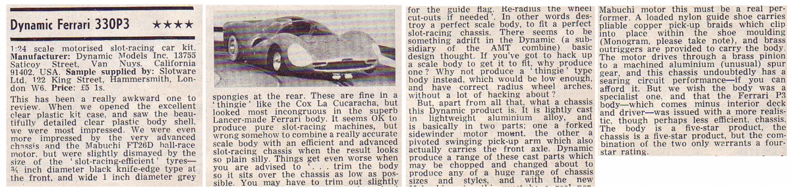

The Ferrari 330 P3 made its debut at the 24 Hours of Le Mans in 1966. It was designed to compete in the Prototype class, specifically in the 4.0-Liter class.
The car featured a 4.0-liter V12 engine, producing significant power and performance. The 330 P3 aimed to continue Ferrari's success in endurance racing.
Despite facing strong competition, including Ford GT40s, the Ferrari 330 P3 performed exceptionally well. One of the highlights was a 1-2-3 finish for Ferrari, with the 330 P3 securing the top positions.
The legacy of the 330 P3-
The Ferrari 330 P3 remains a symbol of excellence and success in sports car racing, and its history at Le Mans is an integral part of the broader narrative of Ferrari's dominance in endurance competitions during the 1960s.
It undoubtedly left its mark on the racing world, forever.
Le Mans newspapers on the 330 P3



Here's a video of the 330 P3 at the 24 hours of Le Mans in '66-